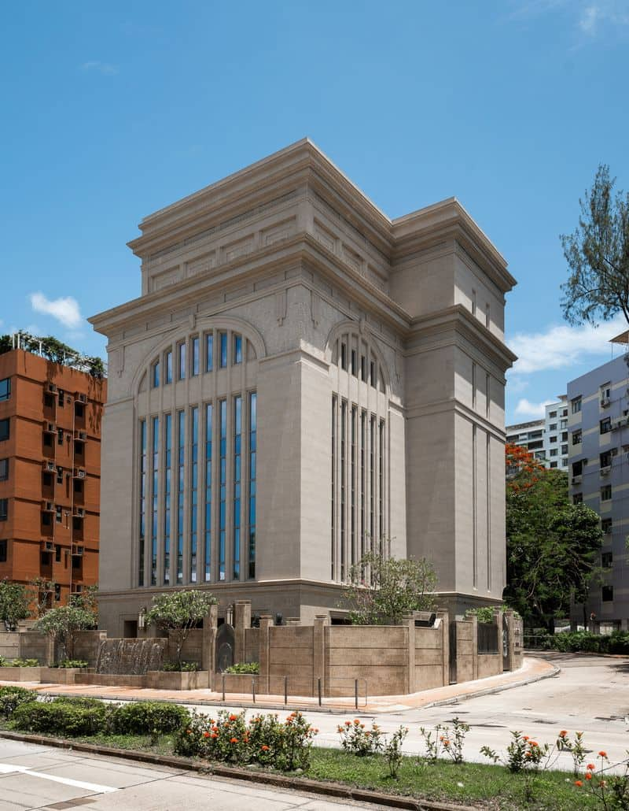

Álbum do Templo
☰
Home
Old
New
Large
Small
Templos da Igreja
Templo de Salt Lake
Templo de Nauvoo
Templo de Manti
Templo de São Paulo
Templo de Jordan River

Templo de Hong Kong
Templo de Brasília
Templo de Colonia Juárez